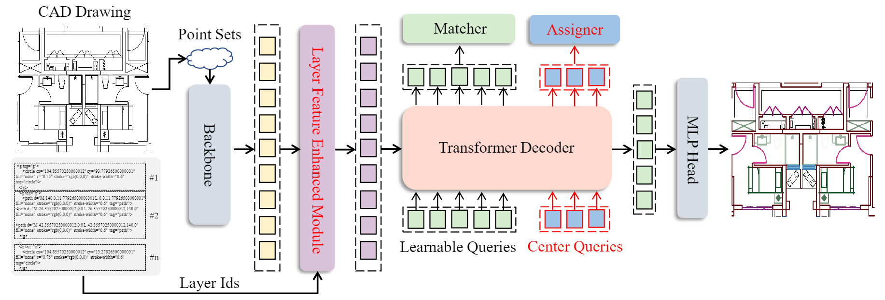
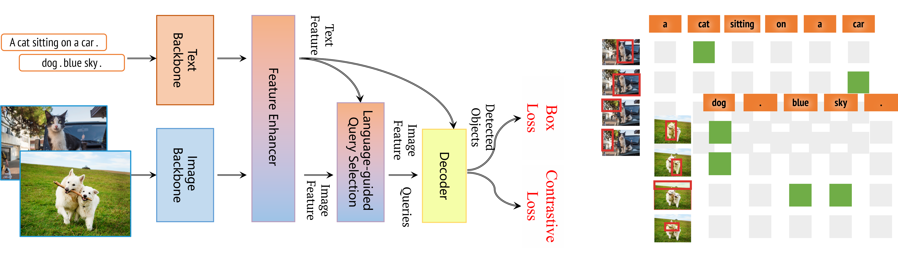
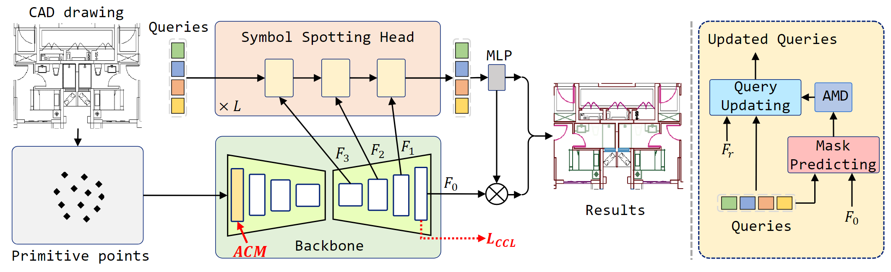
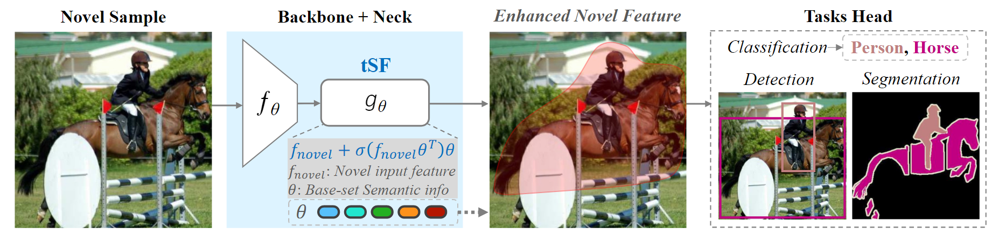

|
Research
See full list at Google Scholar. Representative papers are shown below.
|
|

|
SymPoint Revolutionized: Boosting Panoptic Symbol Spotting with Layer Feature Enhancement
Wenlong Liu,
Tianyu Yang,
Qizhi Yu,
Lei Zhang,
Tech report, July. 2024
|
|

|
Grounding DINO 1.5: Advance the "Edge" of Open-Set Object Detection
Tianhe Ren,
Qing Jiang,
Shilong Liu,
Zhaoyang Zeng,
Wenlong Liu,
Han Gao,
Hongjie Huang,
Zhengyu Ma,
Xiaoke Jiang,
Yihao Chen,
Yuda Xiong,
Hao Zhang,
Feng Li,
Peijun Tang,
Kent Yu,
Lei Zhang#
Tech report, May. 2024
|
|

|
Symbol as Points: Panoptic Symbol Spotting via Point-based Representation
Wenlong Liu*,
Tianyu Yang,
Yuhan Wang,
Qizhi Yu,
Lei Zhang,
Conference on International Conference on Learning Representations (ICLR), 2024
|
|

|
tSF: Transformer-based Semantic Filter for Few-Shot Learning
Jinxiang Lai,
Siqian Yang,
Wenlong Liu,
Yi Zeng,
Zhongyi Huang,
Conference on European Conference on Computer Vision (ECCV), 2022
|
|
Selected Awards
Double Winner in CVPR 2022 CLVision Challenge Track 2 and Track 3:
|
|
Professional Services
Conference Reviewer:
European Conference on Computer Vision (ECCV), 2022.
IEEE Conference on Computer Vision and Pattern Recognition (CVPR), 2022.
|
|